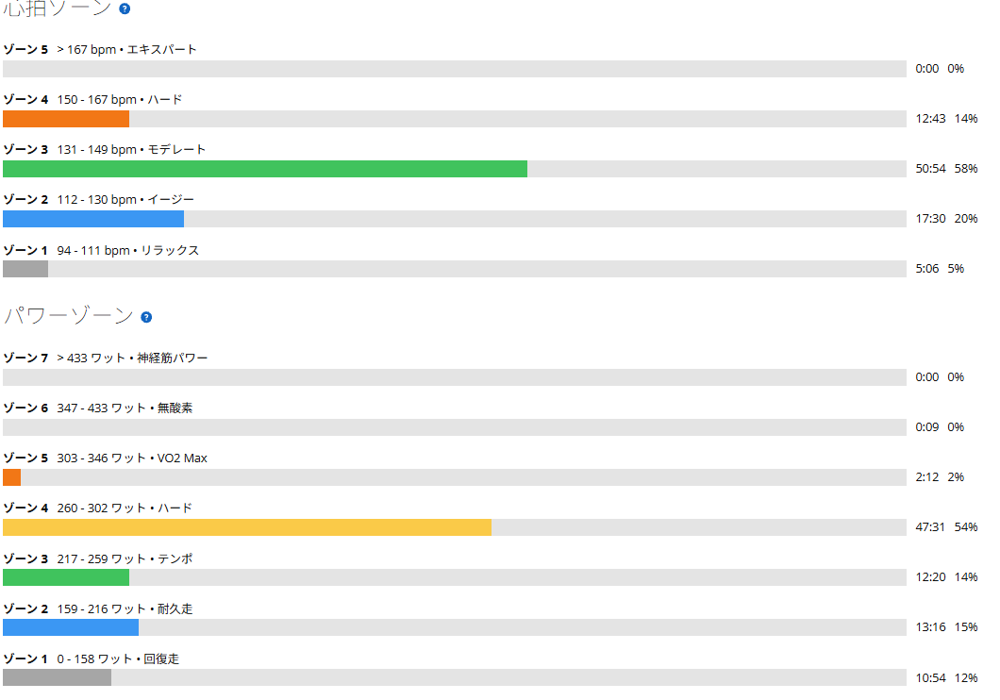
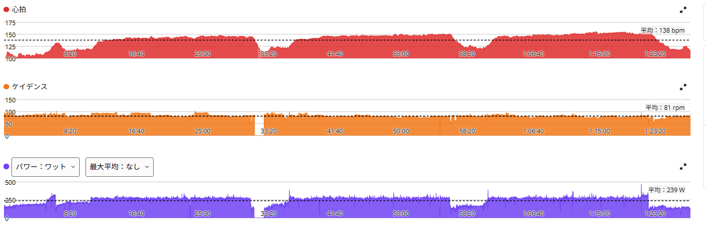

SST20分×3本。270ｗ出そろった！
今日は本当なら太平山へ行く予定だった。でも朝から路面が濡れていたので、外は中止。ローラーに切り替えた。昨日は唐沢ゴルビーで、かなりしっかり踏んだ翌日である。ベース走でもいいかなと思っていたが、脚の状態を見ながらSSTをやることにした。前回の同じメニューで書いた当面の目標は「270・270・260W台後半」。結果は270・271・274W。

約45km・NP254W・TSS110
- 全体45.23km / 1時間26分28秒 / 運動量1,240kJ / 平均気温19.4℃
- 負荷平均239W / NP254W / IF0.877 / TSS110.3 / 20分最大274W / FTP設定289W
- 心拍・回転平均138bpm / 最大160bpm / 平均81rpm
- 効果有酸素TE4.2（主な効果：テンポ）/ 無酸素TE0.0 / 運動負荷218
- 1本目20分 / 270W / 心拍平均142bpm・最大148bpm / 85rpm
- 2本目20分 / 271W / 心拍平均146bpm・最大151bpm / 80rpm
- 3本目20分 / 274W / 心拍平均149bpm・最大160bpm / 79rpm
レストは各5分。パワーのゾーン4（260〜302W）が約48分で全体の半分以上。心拍はゾーン3が中心で、ゾーン4（150bpm以上）は約13分だった。
270・271・274W。3本目が一番高かった

前回は3本目が257Wまで落ちた。今回は落ちなかったどころか、最後が一番高い。3本目の274WはFTP289Wの約95％で、今日の20分最大もこの3本目である。前回からは17W上がった。
ケイデンスは85→80→79rpmと少しずつ下がっている。後半は踏んで押し切った形かもしれない。
数字は揃った。でも楽ではなかった
今日のメニューは、普通にめちゃくちゃきつかった。3本目なんて、余裕で274Wを出せたわけではない。かなり頑張って、なんとか最後まで押し切った感じである。3本目の最大心拍160bpmは今日いちばん高く、グラフでも3本目の終わりに心拍が一番上がっている。
数字が揃ったからといって、楽になったわけではない。それでも最後まで出力を落とさずに終えられた。そこは素直に良かった。
同じ270Wで、心拍が5拍低い
| 10月27日 | 今日 | |
|---|---|---|
| 1本目 | 270W・147bpm | 270W・142bpm |
| 2本目 | 実質270W前後・152bpm | 271W・146bpm |
| 3本目 | 257W・150bpm | 274W・149bpm |
| TSS / 運動負荷 | 106 / 241 | 110 / 218 |
1本目は同じ270Wで心拍が5拍低い。2本目も約6拍低い。3本目は17W高いのに、心拍はほぼ同じだった。
ただ、前回は前日がベース走で、今日は前日がゴルビー。条件は同じではない。
終わった後のダメージが前より少ない
今日いちばん面白かったのは、終わった後だった。前回は、終わった後に全身をかなり使い切ったような疲労があった。今回は、メニュー中はきつかったのに、そこまで壊れた感じがない。
もしかすると、少しずつ体がこの領域に慣れてきたのかもしれない。もちろん、1回だけで断定はできない。でも、同じくらいの出力をこなして、終わった後のダメージが減っているなら、少なくとも悪い変化ではなさそうだ。
次は上げるより、再現する
最近は、ゴルビーだけではなく、SST20分×3本、ベース走60分、古峰ヶ原の長い登りと、「一定以上の出力を長く続ける」練習を増やしてきた。今までは、高い出力を出すこと自体はできても、それを長く維持するところに課題があった。今日の270→271→274Wは、そこが少しずつ変わってきているように見える。しかも前日は唐沢ゴルビー。その翌日にこのSSTだったことを考えれば、かなり頑張れたと思う。
だからといって、次からいきなり280Wへ上げるつもりはない。まずは270〜275Wで20分×3本を安定して再現する。1回だけできるのではなく、「普通にこのメニューができる」ところまで持っていきたい。余裕が出てきたら、また少し上へ。
高い出力を出す。それを維持する。そして、終わった後に潰れすぎない。この3つが少しずつ揃ってくれば、1時間300Wも今より現実的に見えてくるかもしれない。まだ遠い。でも、今日みたいな一日を積み重ねていく。